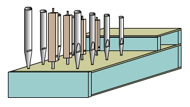
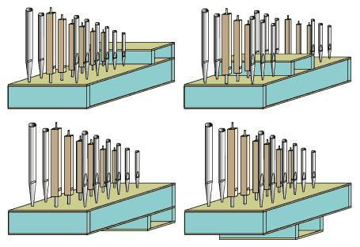
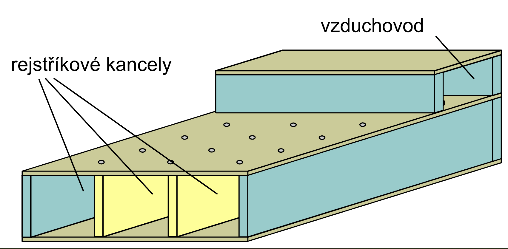
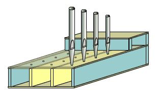
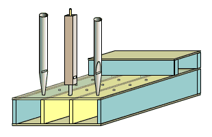
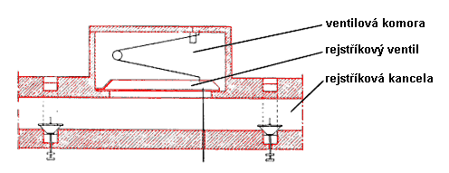
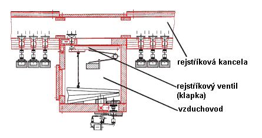
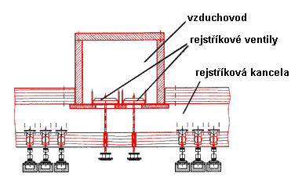

Vzdušnice s rejstříkovými kancelami jsou někdy nazývány vzdušnicemi podélnými. Jsou charakteristické podélným průběhem vzduchových kanálů – kancel. V podélném směru jsou na vzdušnici rozmístěny rejstříky (viz úvodní kapitola o vzdušnicích), každý z těchto kanálů tedy přivádí vzduch jednomu hlasu (rejstříku) nástroje. Jednou
ze součástí vzdušnice je vzduchojem – vzduchová komora s rejstříkovými
ventily, která je pro celou vzdušnici společná (bez dalšího dělení např.
přepážkami). Ve vzduchojemu je přítomen stlačený vzduch, který se sem
v potřebném množství přivádí z měchu přes vzduchovod. U tohoto typu
vzdušnice tato komora probíhá v opačném směru, než u vzdušnice s tónovými
kancelami, a to napříč. Ilustrace představuje vzdušnici s rejstříkovými
kancelami, u níž je vzduchojem umístěn na okraji vzdušnice seshora,
možné je ale i umístění zdola. Nejčastější umístění vzduchojemu je ale
poněkud odlišné, většinou se situuje do blízkosti středu vzdušnice z
důvodu rovnoměrnějšího zásobování kancel vzduchem (díky vlastnostem
stlačeného vzduchu by nebylo možné zajistit jeho důležité parametry,
především tlak, při proměnném odběru po celé délce dlouhého a přitom
úzkého kanálu). Různé uložení vzduchojemu vůči vzdušnici znázorňuje
následující obrázek: |

Vzduchojem je spojen s další částí vzdušnice, která je přepážkami rozdělena na podélné komory – rejstříkové kanály (kancely). Na následující animaci je znázorněno vnitřní uspořádání a vazba těchto dvou součástí vzdušnice, vzduchojem je zde situován na horní straně při okraji. Jak je patrné z animace, vzdušnice je rozdělena podélně (odtud jedno z jejich označení jako podélné vzdušnice). Rejstříkových kancel je tolik, kolik je na vzdušnici rejstříků (hlasů). |

Vzduch se ze vzduchojemu do příslušné kancely dostane přes otvory, které jsou v klidu uzavřeny pomocí ventilů (ventily na obrázcích a animaci nejsou znázorněny). Na předchozí animaci mají tyto otvory naznačeny kruhový průřez, použité ventily tedy budou mít tvar kužele (kuželkové ventily). Používají se i ventily obdélníkového tvaru (klapkové), jejich výhodou je podstatně větší průřez otvoru (a tím i větší množství vzduchu, které jsou schopny propustit do kancely). Vzduchojem s rejstříkovými ventily probíhá napříč celou vzdušnicí, umožňuje tedy dodávat vzduch všem rejstříkovým kancelám (rejstříkům na ní postaveným). |
Na obrázku jsou píšťaly jednoho hlasu (rejstříku), stojící na povrchu vzdušnice. Všechny píšťaly jednoho hlasu jsou rozmístěny nad jednou rejstříkovou kancelou, probíhající vzdušnicí po celé délce. Po naplnění kancely stlačeným vzduchem přes rejstříkový ventil ve vzduchojemu by v tomto uspořádání zazněly všechny píšťaly současně. Potřebují tedy ještě jeden mechanismus, který vzduch z kancely pustí jen k píšťale toho tónu, který má znít (jehož klávesa je stisknuta na příslušné klaviatuře). Tímto mechanismem jsou tónové ventily, které nejsou na nákresech znázorněny a jejichž popis následuje v kapitolách o konkrétních typech vzdušnic (kuželkové ventily, membránové ventily…). |
Píšťaly jednotlivých hlasů jsou tedy umístěny podélně, příčně jsou řazeny píšťaly, patřící jednomu tónu. Jsou proto naladěny na stejný tón (případně podle polohy rejstříku na jeho alikvotní tóny) např. c, sousedící píšťaly d, další e atd. (platí pro vzdušnici rozdělenou na C a Cis stranu, jinak je sled tónů jiný, např. chromatický – c, cis, d, dis, e…). Toto uspořádání píšťal je tedy stejné, jako u vzdušnice s tónovými kancelami (je tedy nezávislé na vnitřní konstrukci vzdušnice). |
Pro lepší představu o konstrukci vzdušnic s rejstříkovými kancelami je na následujících obrázcích uvedeno několik nákresů řezů těmito vzdušnicemi v podélném směru (kancely tedy na nich probíhají zleva doprava). Součásti související bezprostředně s rozdělováním stlačeného vzduchu jednotlivým rejstříkům jsou na nich zvýrazněny červenou barvou. Zbývající součásti (zakreslené černě) patří buďto traktuře nebo tónovým ventilům, jejichž konstrukce a funkce jsou popsány na následujících stránkách s podrobným popisem jednotlivých variant tohoto typu vzdušnice. |

První obrázek ukazuje řez vzdušnicí, jejíž ventilová komora je umístěna shora přibližně v polovině její délky. Rejstříkový ventil má podobu klapky s velkým průřezem, což umožňuje propouštění poměrně velkého množství vzduchu do kancely (po jeho otevření). Následující obrázek ukazuje obdobný řez u vzdušnice, ve které je ventilová komora zespodu. Klapkový ventil má poněkud jinou konstrukci a je svázán s poměrně složitým systémem elektropneumatické traktury: |

A ještě jeden nákres vzdušnice s ventilovou komorou seshora, ve které je použita dvojice plochých ventilů (s konstrukcí podobnou kuželkovým ventilům). Konstrukce s kuželkovými ventily je téměř shodná, pro zásobováni kancely jsou z důvodu menšího průřezu (oproti klapkovým ventilům) většinou použity kuželky dvě. Je-li v tomto případě ventilová komora ve středu vzdušnice, bývají její dvě části navíc od sebe odděleny přepážkou, každá z kuželek tak napájí jen svou polovinu vzdušnice. Přepážka zabraňuje „obracení“ toku vzduchu v kancele při střídavé hře na píšťaly, umístěné vlevo či vpravo od ventilové komory a předchází tak případnému kolísání jeho tlaku: |

Všechny předchozí ilustrace a popis vzdušnice s rejstříkovými kancelami objasňují její první funkci – přidělování vzduchu jednotlivým rejstříkům. Jeho cesta dále vede k píšťalám přes tónové ventily (toto pořadí je tedy obrácené, než u vzdušnice s tónovými kancelami, kde jsou na cestě vzduchu od měchu k píšťale první tónové ventily, pak až následuje rejstříkový aparát). Přestože je princip ovládání přítoku vzduchu z kancely do píšťaly podobný, konstrukce prvku, který se o toto řízení stará může být značně odlišná. Podle toho vzdušnice s rejstříkovými kancelami můžeme dále dělit na jednotlivé podtypy:
Tomuto dělení odpovídá i popis konstrukce vzdušnic na následujících strankách. |
Na navazujících stránkách najdete popis základních konstrukčních variant vzdušnic s rejstříkovými kancelami - kuželková vzdušnice, membránová vzdušnice a vzdušnice se svislými ventily. Další stránky o vzdušnicích se zabývají dalšími konstrukčními variantami vzdušnic s tónovými kancelami - zásuvková vzdušnice, ventilová vzdušnice, pružinová vzdušnice a skříňová vzdušnice (Unit). |
Poznámka: Tato stránka je součástí Anatomie varhan ®, © Ing. Petr Bernat. Všechny animace © Konrad Zacharski